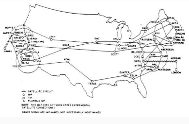

Hostória da Internet e WEB
A Internet e a Web são duas das maiores inovações tecnológicas da história, transformando a forma como nos comunicamos, acessamos informações e conduzimos negócios. Enquanto a Internet surgiu como uma rede de comunicação global descentralizada, a Web permitiu a interligação de documentos e serviços, tornando a informação acessível de maneira intuitiva. Este documento explora a evolução dessas tecnologias, desde suas origens na Guerra Fria até sua consolidação como parte essencial da sociedade moderna.
Após a Segunda Guerra Mundial, o mundo entrou na era da Guerra Fria, caracterizada pela disputa de influência entre as superpotências, um intenso avanço tecnológico e uma profunda desconfiança mútua. Esse período (1947-1991) moldou a geopolítica global sem levar a um confronto direto.
Sistemas de Comunicação Centralizados
Durante esse período, os sistemas militares de comunicação evoluíram rapidamente, mas apresentavam vulnerabilidades. Alguns dependiam da rede de telefonia pública, considerada frágil; outros utilizavam radares e sistemas de rádio, mas todos eram centralizados. Isso significava que a perda de poucas estações (ou nós) poderia interromper o serviço.
O Surgimento da ARPANET
Diante desse cenário, o Departamento de Defesa dos Estados Unidos temia que um ataque comprometesse suas linhas de comunicação militar. Como resposta, em 1969, foi criada a ARPANET (Advanced Research Projects Agency Network), um projeto financiado pela ARPA para interligar laboratórios de pesquisa. Inicialmente, conectou quatro universidades e permitiu que cientistas compartilhassem informações e recursos remotamente. Nos anos 1980, a ARPANET substituiu seu protocolo original (NCP) pelo novo TCP/IP, consolidando-se como a principal rede de comunicação global. Em 1985, a Internet já estava em expansão acelerada.
A Expansão da Internet
No final da década de 1980, a Internet conectava milhares de centros de pesquisa, instituições, universidades e grandes empresas ao redor do mundo. No Brasil, a rede chegou em 1988 e foi liberada para uso comercial e doméstico em 1994. Até 1990, os principais serviços disponíveis na rede eram:
- Linguagem HTML: Para criação de documentos estruturados com links.
- Servidor HTTP: Responsável por processar requisições e enviar páginas.MIRC: Ferramenta de bate-papo em tempo real.
- Gopher: Fóruns de discussão online.
- FTP: Transferência de arquivos entre computadores.
O Surgimento da World Wide Web (Web)
Em 1989, o cientista britânico Tim Berners-Lee, trabalhando no CERN, propôs um sistema baseado em hipertexto
para facilitar o compartilhamento de informações entre pesquisadores. Ao trabalhar no CERN ele notou que
muitos dos estudos já feitos não eram reaproveitados pois não tinha como todos acessá-los. Fazendo com que
houvesse muito tempo perdido com retrabalho. Sua ideia era viabilizar o compartilhamento de estudos, artigos
e demais produções dos pesquisadores do CERN.
De inicio não obteve interesse dos demais pesquisadores,
mas após a criação dos componentes Web, trouxe visibilidade e interesse para sua criação.
A proposta do projeto era estruturada da seguinte forma:

Em 1990, ele desenvolveu os principais componentes da Web:
- Protocolo HTTP: Permitia a troca de informações entre cliente e servidor.
- Servidor HTTP: Responsável por processar requisições e enviar páginas.
- Cliente HTTP: Primeiro navegador capaz de acessar páginas da Web.k
- Linguagem HTML: Para criação de documentos estruturados com links.
Em 30 de abril de 1993, a Web foi lançada para domínio publico. A web tornou simples para qualquer um navegar na internet
 Tim Berners-Lee
Tim Berners-Lee
Arquitetura Cliente-Servidor e o HTTP
A arquitetura cliente-servidor é um modelo em que um cliente (exemplo: um navegador) solicita informações a um servidor, que processa o pedido e responde. A comunicação na Web ocorre por meio do protocolo HTTP (Hypertext Transfer Protocol). Quando um cliente faz uma solicitação, uma mensagem HTTP é enviada para o servidor, que a processa e retorna uma resposta contendo o conteúdo solicitado (geralmente, um documento HTML).